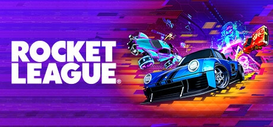

Practica Luis Calvo Herra
Anterior
Home
Siguiente

5. Rocket League
Fecha de Lanzamiento: 7 de julio, 2015
Plataformas: PlayStation 4, Xbox One, Nintendo Switch, PC
Rocket League es un juego único que mezcla fútbol con autos a propulsión. Su jugabilidad adictiva y sencilla de entender, pero difícil de dominar, lo ha convertido en un fenómeno global. Ya sea en partidas casuales o en competencias eSports, su ritmo frenético y su necesidad de trabajo en equipo lo hacen un título imprescindible para quienes buscan acción rápida y competitiva.